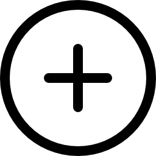

Welcome to the Capitalism App
To leave the editor press ; To re-open it press
To close this help window press  ; to re-open it press
; to re-open it press
From This Window
To create a new commodity, press .
Any social classes or industries that consume or produce it will be created automatically. When you have created a commodity, you can edit its details in the table above.
You may also have to edit the industries, and social classes, that use or produce it.
You can also edit a simulation that has already been defined,
In all cases you can save the result, and run it from the simulation.
Definitions
Commodity: In this App, a commodity is anything that is bought and sold. Some theories adopt stricter definitions
Function: if a commodity is consumed, it is a Consumer Good. If it is used to produce other commodities, it is a Productive Input. Since a commodity has a definite single use, it cannot have two functions.
Some commodities are neither consumed nor used to produce other commodities, for example some types of money
Origin: If a commodity is produced by an industry, its origin is Industrial. If it is produced by a social class, its origin is Social. In this app, a commodity cannot have two origins. This may change.
Some commodity are not produced at all, for example some types of money.